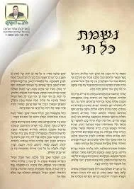

הרב יוסף מוראדי - בארגון הידברות
ניתן להזמין הרצאה מלווה בשקפים מדהימים על המעלה והעוצמה האדירה לדיבור של האדם ,סגולות האדירות של נשמת כל חי בליווי סיפורים אישים ,ובסוף שירת נשמת כל חי משותפת עם הציבור בליווי הסרטון המלא .מתאים לכל שכבות הציבור ,לכל מי שרוצה להודות ולהלל לבורא עולם . משך הרצאה והמצגת בין 45 ד' לשעה פל' להזמנות 0524161412
שיעורים נפלאים על מעלת נשמת כל חי
נשמת כל חי - הרב יוסף מוראדי באולפני הידברות (חלק 1)
נשמת כל חי - הרב יוסף מוראדי באולפני הידברות (חלק 2)
נשמת כל חי - הרב יוסף מוראדי באולפני הידברות (חלק 3)
נשמת כל חי - הרב יוסף מוראדי באולפני הידברות (חלק 4)
שירת נשמת כל חי
שירת נשמת כל חי הרב יוסף מוראדי
